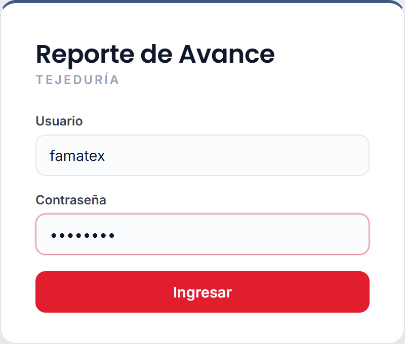
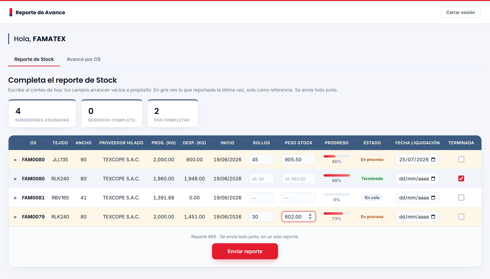
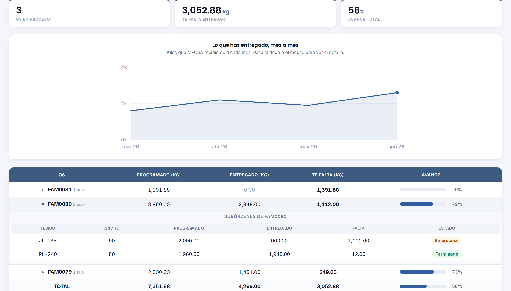

MECSA · Tejeduría
Portal de Tejedores
Guía rápida para reportar tu avance
En 3 pasos aprendes lo esencial: entrar, reportar tu stock y ver tu avance.
No necesitas instalar nada; funciona en la computadora o en el celular.
1
Entrar al portal
- Abre el enlace que te compartió MECSA.
- Escribe tu usuario y tu contraseña.
- Toca Ingresar.

2
Reportar tu stock
Es lo que harás cada día: contar lo que tienes y enviarlo.
- En Rollos, escribe cuántos rollos tienes hoy.
- En Peso stock, escribe los kilos que tienes hoy.
- Si ya terminaste una suborden, marca la casilla Terminada.
- Toca Enviar reporte. Se envía todo junto, en un solo paso.

Solo escribes en Rollos, Peso stock y Terminada. Lo demás es información que te muestra MECSA.
Bueno saber:
• Los campos arrancan vacíos a propósito: escribe el conteo de hoy. En gris (ej. «últ. 34») ves lo que reportaste la vez pasada, solo como referencia.
• La columna Estado se pone sola:
En cola aún no reportas nada ·
En proceso ya reportaste algo ·
Terminado marcaste la casilla.
• En Fecha de liquidación pon cuándo crees que terminarás esa suborden. Puedes cambiarla si ves que no llegas.
Tip: el triángulo ▶ al inicio de cada fila abre el detalle de las guías con las que ya entregaste.
3
Ver tu avance
Toca la pestaña «Avance por OS» para ver cómo vas.
- Ves cuánto llevas entregado y cuánto te falta por cada OS.
- Toca el ▶ de una OS para ver sus subórdenes en detalle.
- El gráfico muestra lo que has entregado mes a mes.

Preguntas rápidas
¿Por qué los campos salen vacíos cada vez?
Para que reportes lo de hoy, no lo de ayer. Lo anterior queda en gris, solo de referencia.
Me equivoqué y ya envié.
No pasa nada: vuelve a escribir el valor correcto y toca Enviar reporte otra vez. Vale el último envío.
Marqué «Terminada» pero la suborden sigue apareciendo.
Es normal. Se queda hasta que MECSA la confirme; ahí deja de aparecerte y pasa a «Avance por OS».
¿Tengo que llenar todas las subórdenes?
No. Llena solo las que quieras actualizar y envía.
¿Funciona en el celular?
Sí. La tabla se acomoda sola en pantallas pequeñas.
¿Dudas? Escríbele al equipo de Sistemas de MECSA. · Portal de Tejedores — Guía rápida